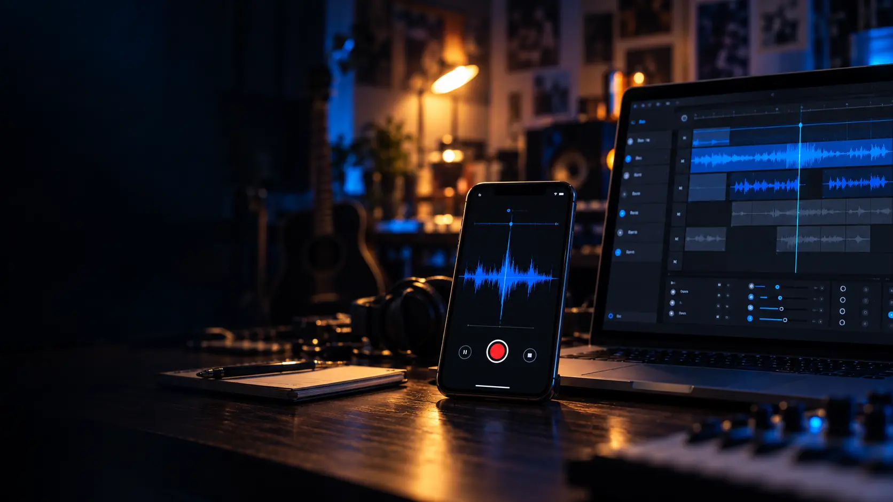

<template id="scene-02-template">
  <div data-composition-id="scene-02" data-width="1920" data-height="1080" class="scene scene--capture">
    
    <div class="scene-content">
      <div class="scene-head">
        <p class="scene-label">01 — Capturer</p>
        <h2 class="scene-title">L’inspiration<br />ne prévient pas<span class="blue-period">.</span></h2>
        <div class="scene-rule"></div>
        <p class="scene-copy">Une voix. Un rythme. Quelques mots saisis au passage.</p>
      </div>
      <div class="scene-meta"><span>UNE IDÉE À RETROUVER, AVEC SON CONTEXTE</span><span>02 / 05</span></div>
    </div>
    <script>
      window.__timelines = window.__timelines || {};
      const tl = gsap.timeline({ paused: true });
      tl.from("[data-composition-id='scene-02'] .scene-label", { opacity: 0, y: -18, duration: 0.36, ease: "sine.out" }, 0.08);
      tl.from("[data-composition-id='scene-02'] .scene-title", { opacity: 0, x: -48, duration: 0.6, ease: "expo.out" }, 0.19);
      tl.from("[data-composition-id='scene-02'] .scene-rule", { scaleX: 0, duration: 0.52, ease: "power2.out" }, 0.57);
      tl.from("[data-composition-id='scene-02'] .scene-copy", { opacity: 0, y: 29, duration: 0.5, ease: "power4.out" }, 0.66);
      tl.from("[data-composition-id='scene-02'] .scene-meta", { opacity: 0, x: 20, duration: 0.42, ease: "circ.out" }, 1.04);
      tl.fromTo("[data-composition-id='scene-02'] .scene-photo", { x: -14 }, { x: 0, duration: 3.9, ease: "none" }, 0);
      window.__timelines["scene-02"] = tl;
    </script>
  </div>
</template>
